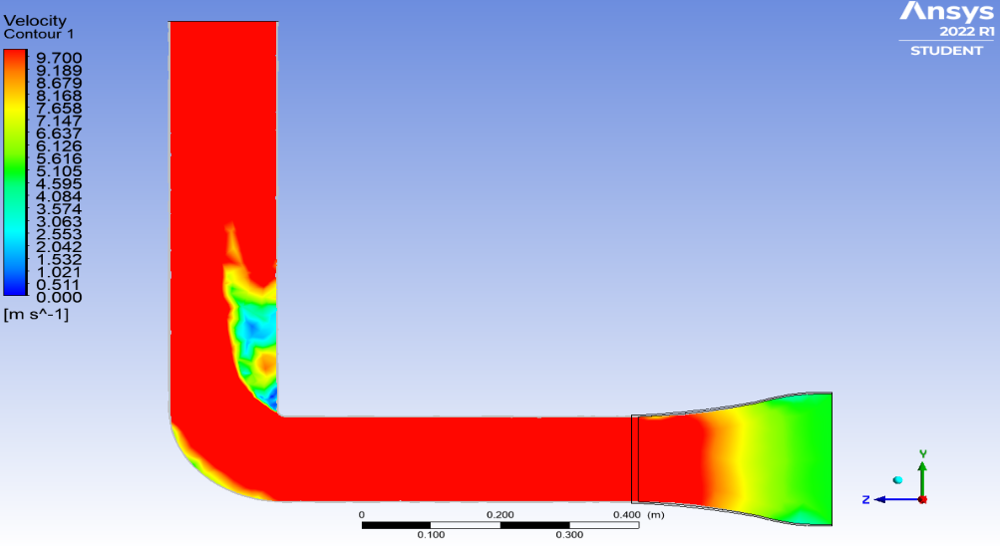

Construction & Calibration



Aerodynamic Testing Facility for DSU Aerospace Department
The objective was to design and construct a cost-effective, open-circuit vertical wind tunnel for the Aerospace Department at Dayananda Sagar University (DSU). The primary requirement was to achieve a stable, low-turbulence airflow in the test section to allow for accurate aerodynamic verification of small-scale UAVs and airfoil models.
I led the aerodynamic design, calculating the contraction ratio of 2.42 to accelerate the flow while minimizing boundary layer separation. I utilized Ansys CFD simulations to model the pressure drop and velocity distribution across the contraction cone, ensuring that the flow would remain attached to the walls. To eliminate swirl generated by the fan, I engineered a flow conditioning section using a honeycomb mesh screen and anti-turbulence nets. The mechanical structure was built to modular specifications, allowing for easy disassembly and maintenance.
Upon construction, I performed rigorous calibration using Pitot-static tubes and hot-wire anemometry. The testing confirmed a maximum stable velocity of approximately 8 m/s with a turbulence intensity of less than 1%, validating the CFD predictions. This wind tunnel is currently operational and remains in use by the DSU Aerospace Department for student laboratory experiments and research, serving as a lasting contribution to the university's testing infrastructure.
Designing physical test rigs to validate theoretical aerodynamic models.
Using screens and honeycombs to convert turbulent fan output into laminar flow.
Calibrating wind speed using differential pressure sensors (Pitot tubes) and anemometers.
Creating a modular mechanical structure that is durable enough for long-term academic use.